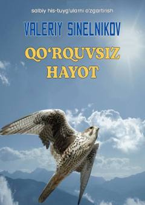

QHQo'rquvni yengish va ruhiy xotirjamlikka erishish bo'yicha amaliy qo'llanma.
Ushbu kitob taniqli psixoterapevt Valeriy Sinelnikov tomonidan yozilgan bo'lib, inson hayotiga salbiy ta'sir ko'rsatuvchi qo'rquv hissini yengish usullarini o'rgatadi. Muallif qo'rquvning kelib chiqish sabablari, uning jismoniy va ruhiy salomatlikka zarari hamda undan xalos bo'lish yo'llarini amaliy misollar va so'fiy masallari orqali tushuntiradi.